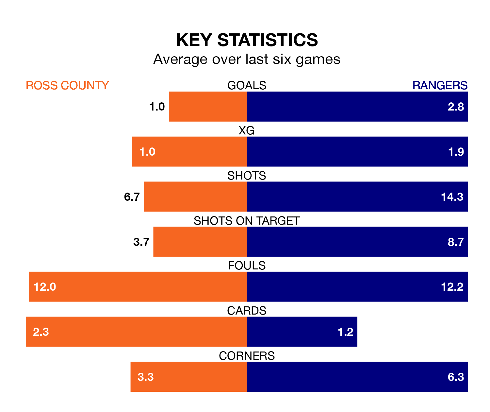

Relegation candidates Ross County face a challenge against high-flying Rangers at the Global Energy Stadium on Sunday.
Ross County are 11th in the Premiership table, and have picked up six wins and nine draws in their 32 games to date.
Rangers, meanwhile, are second in the standings with 74 points, having won 24 and drawn two of their first 31 matches, and are one point behind table-toppers Celtic.
With 70 goals in 31 games so far this season, Rangers are the league's second-highest scorers with 2.3 goals per game. And they are conceding fewer than average, letting in 20 goals at a rate of 0.6 per game.
Ross, meanwhile, are below average scorers, with 0.9 goals per game, compared to a league average of 1.3. They have conceded 1.7 goals per game.
With Jack Butland between the sticks, the away side can rely on one of the league's safest pair of hands. He has kept 17 clean sheets in his 31 appearances this season, and no 'keeper has prevented the opposition scoring more often in the Premiership.
In County's net, Ross Laidlaw has six clean sheets in 19 games. He has conceded a goal every 63 minutes, more than twice as often as the 140 minutes between goals for Butland.
In the last 10 years, Ross and Rangers have played each other on 21 occasions. Rangers won 17 of them and they drew four times.
On average, the Staggies scored 0.7 goals and Rangers 2.6 in those matches.
Their last meeting was on February 14, when Rangers won 3-1 at home.
The Staggies are in disappointing form in the Premiership, with one win and two draws from their last six games.
With four wins and a draw over that period, Rangers's form is much better – they have taken 13 points from 18, compared to the hosts' five.
Ross's last match was on April 6, a 1-0 loss against Kilmarnock.
Rangers drew 3-3 with Celtic last time out, on April 7, with Abdallah Sima, James Tavernier and Rabbi Matondo on the scoresheet.
Updated: 10:01 (UTC), 12/04/24